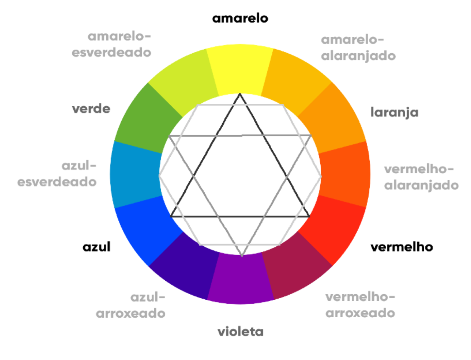

A combinação de fundo preto + letras brancas causa cansaço visual, se for usar tenha poucos textos no site.
Saber escolher uma boa paleta de cores, que harmonize com nosso conteúdo, é o primeiro passo para fazer um site bonito. Todo conhecimento para o desenvolvedor é útil, seja um pouco de design, marketing digital, photoshop, etc.
As cores podem influenciar o tempo que um visitante passa em seu site, podendo infleunciar a decisão de alguém a respeito de comprar ou não algo.
Segundo Neil Patel, um grande especialista na otimização de conteúdos, em seu artigo "Como cores afetam conversões" afirma que as pessoas levam 90 segundos para decidir se querem ou não um produto, e que 90% dessa decisão se baseia na sua cor.
As cores passam emoção para o subconsciente das pessoas, muitas vezes nem percebemos que alguém usou a psicologia das cores para modelar um site ou produto, para assim nos influenciar.
Recomendo que pesquise um pouco sobre psicologia das cores caso queira.
No caso da cor azul, ela nos remete a harmonia, equilíbrio, confiança, profissionalismo, integridade e segurança. Essa cor é a favorita de quase metade da população, além de ter uma taixa de rejeição entre 1% e 2%.
Mas é claro que não devemos levar tudo como uma verdade absoluta, existem cores que não são recomendadas em artigos a respeito disso, mas que fizeram sucesso. Aqui estão algumas sugestões de aplicação de algumas das cores mais usadas em sites:
Você pode adotar uma paleta de cores, quando bem planejada ela faz com que tudo faça sentido quando as pessoas olharem para o resultado visual. Aqui
alguns exemplos de paletas de cores:


Dentro da teoria das cores devemos separar em grupos as cores escolhidas para ver se o nosso site vai ficar harmônico e também para que os visitantes se sintam atraídos pelo projeto instintivamente. A seguir uma imagem do círculo cromático:
Na construção de nosso site usamos paletas de cores, elas são compostas de 3 a 5 cores (não contando o branco e o preto). Você também pode usar a logo de seu cliente (a cor primária dela pelo menos) para utilizar na construção do site.

Na imagem acima vemos as seguintes classificações de cores:
Também podemos separar o círculo cromático em cores frias e cores quentes. As cores quentes criam uma sensação de calor
e proximidade. Já as cores frias estão associadas a sensações mais calmas, de frescor e tranquilidade.